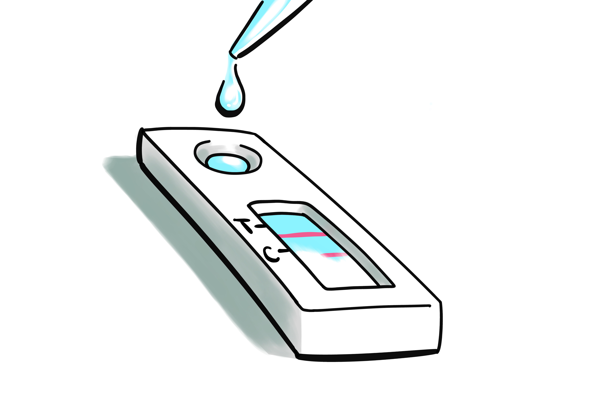
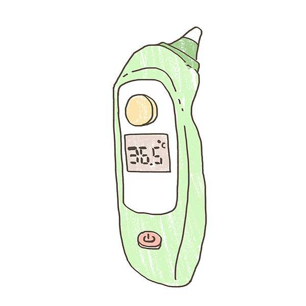

係指蒐集、準備及檢查取自於人體或動物之檢體，作為診斷疾病或其他狀況 (含健康狀態之決定) 而使用之診斷試劑、儀器或系統等醫療器材。
體外診斷試劑係指前述之任何試劑、校正物質或對照物質
舉例：血糖機、驗孕棒屬於IVD ；額溫槍、MRI屬於醫療器材
1. 各國法規資訊：
2. 診斷試劑法規項目：
檢測試劑/套組查驗登記應檢附資料可能包含但不限於以下文件：
(1) 行政文件：查驗申請書、動物用藥品販賣許可、代理授權許可。
(2) 技術性文件：仿單、研究開發概要、確效試驗資料、生產綱要、安定性試驗資料、原材料背景資訊 (如細胞、抗原及抗體來源)。
(3) 背景資訊：工廠登記資訊、製造廠資訊、水質聲明、獸醫生物技術人員資格。
台灣
美國_USDA VETERINARY SERVICES MEMORANDUM
OIE_Manual of Diagnostic Tests and Vaccines for Terrestrial Animals 2019M